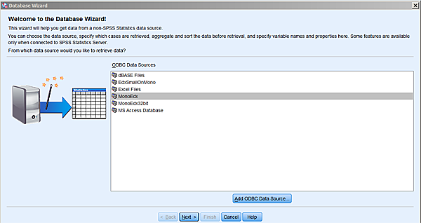
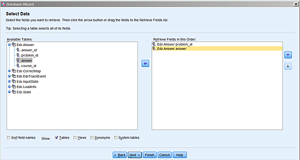
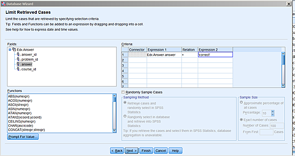
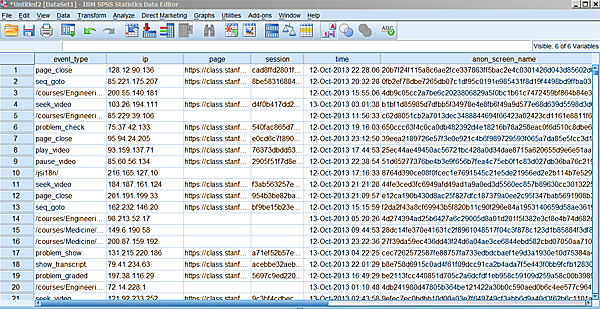
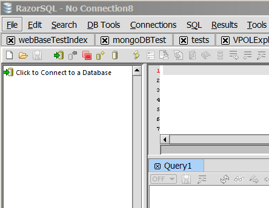
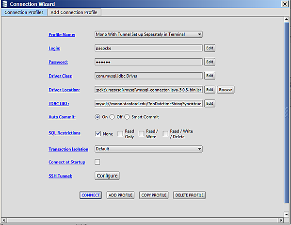
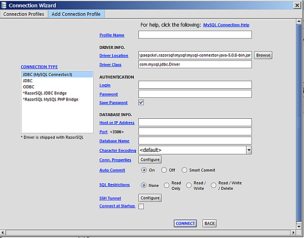
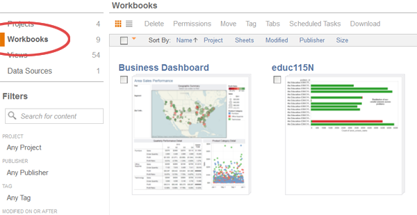
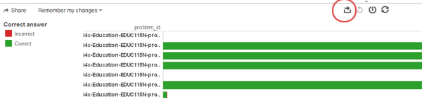
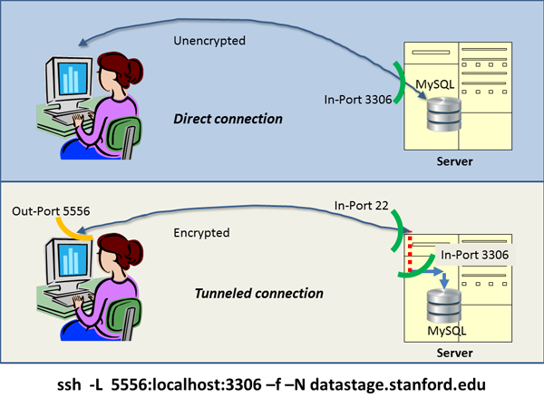

install your database connector.
In SPSS:
File-->Open Database-->New Query
Assuming you have set your connector to point to database Edx,
and that you named it MonoEdx (for whatever fanciful reason),
you will then see this:

Choose whichever real name you gave your connector, and
click next. You now get to choose the fields that you want to
extract from the database:

SPSS has figured out which tables are available in this database, and
you can start moving fields over to the right. Once you again clicked
on next, you will have an opportunity to introduce conditions
on which rows you would like to import:

I am still a bit puzzled by the interface of this screen. If you get
stuck, we can try to figure it out. If all goes well, you will now see
something like this:

Browsing and Querying the Data
A number of applications are available for browsing data stored in
MySQL databases, the type in which VPOL data resides. Some
applications
are discussedon
the
Web. Froq
for Mac, and RazorSQL for Mac,
Linux, and Windows are freeware tools used in the VPOL group.
RazorSQL
The application RazorSQL, which works under Mac, Windows, and
Linux, can create either a tunneled or a direct connection to
MySQL. For details on the difference, please
see Appendix B. You begin the connection process
by choosing:
File-->New Tab (no connection)
In the subsequent screen, you click on Click to connect to a
database:

...resulting in:

This screen allows you to select among different connections you have
already defined. Not having defined any, you click Add Profile,
and pick MySQL from the resulting list of database types that
the application knows about.

Here is where you fill in the particulars. Leave all pre-filled fields
alone. For Profile name you pick any name that reminds you
later of what this connection is about.
Login and Password are the information you received with
your access material. For Host or IP Address you fill in
datastage.stanford.edu. The Port is left
blank. In the Database field you enter one of the databases of
Appendix A. Click Connect, and you
(hopefully) see a screen other than one informing you of failure.
At this point, you can continue via the RazorSQL manual and help
pages.
Picking up data and visualizations prepared by staff
or friends
Sometimes staff or friends might prepare either data extracts or
visualizations for you. If they park this information on
infoviz.stanford.edu, they will give you the name of a 'workbook' on
that server. To see the visualizations, and/or to grab the underlying
data as .csv files follow these instructions:
- Go to infoviz.stanford.edu
- Log in as vpol/vpol
- Click on Workbooks
- Find your workbook, and click on it

You should then see some number of charts that are part of the
material for you. Open one of these views. Hover over marks to
see tooltips. To see the data that is involved in a view, click the
leftmost of the icons above the view.
Its tooltip says Export. You'll get a new window with two tabs:
the one you'll be on will be just the data that went into the
particular view you were on when you clicked export.
If you want to grab all the data, choose the
tab Underlying. You'll see the first 200 rows. Note that you
might see some data in this fully populated table that you don't see
in the visualizations: some rows might be filtered out in the
views. You will need to do the same if appropriate to your further
plans.

Finally, to download, click the link Download all rows as a text
file
Appendix A: List of Available Databases
Course-to-Go Hosted Databases
c2g-db_winter_2013_forum
c2g-networking_fall2012_forum
c2g-solar_fall2012_forum
Coursera Hosted Databases
coursera-20130421-2305-12feb-gametheory_anonymized_forum
coursera-20130421-2305-12feb-gametheory_anonymized_general
coursera-20130421-2305-12feb-gametheory_hash_mapping
coursera-20130421-2305-12feb-gametheory_unanonymizable
coursera-20130421-2305-12jan-algo1_anonymized_forum
coursera-20130421-2305-12jan-algo1_anonymized_general
coursera-20130421-2305-12jan-algo1_hash_mapping
coursera-20130421-2305-12jan-crypto_anonymized_forum
coursera-20130421-2305-12jan-crypto_anonymized_general
coursera-20130421-2305-12jan-crypto_hash_mapping
coursera-20130421-2305-12jan-pgm_anonymized_forum
coursera-20130421-2305-12jan-pgm_anonymized_general
coursera-20130421-2305-12jan-pgm_hash_mapping
coursera-20130421-2305-12jan-pgm_unanonymizable
coursera-20130422-0245-12jan-ml_anonymized_forum
coursera-20130422-0245-12jan-ml_anonymized_general
coursera-20130422-0245-12jan-ml_hash_mapping
coursera-20130422-0245-12jan-ml_unanonymizable
coursera-20130422-0337-12feb-cs101_anonymized_forum
coursera-20130422-0337-12feb-cs101_anonymized_general
coursera-20130422-0337-12feb-cs101_hash_mapping
coursera-20130422-0459-12mar-automata_anonymized_forum
coursera-20130422-0459-12mar-automata_anonymized_general
coursera-20130422-0459-12mar-automata_hash_mapping
coursera-20130422-0459-12mar-automata_unanonymizable
coursera-20130422-0522-12mar-intrologic_anonymized_forum
coursera-20130422-0522-12mar-intrologic_anonymized_general
coursera-20130422-0522-12mar-intrologic_hash_mapping
coursera-20130422-0530-12apr-compilers_anonymized_forum
coursera-20130422-0530-12apr-compilers_anonymized_general
coursera-20130422-0530-12apr-compilers_hash_mapping
coursera-20130422-0530-12apr-compilers_unanonymizable
coursera-20130422-0632-12jan-hci_anonymized_forum
coursera-20130422-0632-12jan-hci_anonymized_general
coursera-20130422-0632-12jan-hci_hash_mapping
coursera-20130422-0632-12jan-hci_unanonymizable
coursera-20130422-0720-12-002-crypto_anonymized_forum
coursera-20130422-0720-12-002-crypto_anonymized_general
coursera-20130422-0720-12-002-crypto_hash_mapping
coursera-20130422-0809-12-002-algo_anonymized_forum
coursera-20130422-0809-12-002-algo_anonymized_general
coursera-20130422-0809-12-002-algo_hash_mapping
coursera-20130422-0919-12-002-ml_anonymized_forum
coursera-20130422-0919-12-002-ml_anonymized_general
coursera-20130422-0919-12-002-ml_hash_mapping
coursera-20130422-0919-12-002-ml_unanonymizable
coursera-20130422-0936-002-crypto_anonymized_forum
coursera-20130422-0936-002-crypto_anonymized_general
coursera-20130422-0936-002-crypto_hash_mapping
coursera-20130422-0936-002-crypto_unanonymizable
coursera-20130422-1039-005-crypto_anonymized_forum
coursera-20130422-1039-005-crypto_anonymized_general
coursera-20130422-1039-005-crypto_hash_mapping
coursera-20130422-1039-005-crypto_unanonymizable
coursera-20130422-1151-12-001-algo2_anonymized_forum
coursera-20130422-1151-12-001-algo2_anonymized_general
coursera-20130422-1151-12-001-algo2_hash_mapping
coursera-20130422-1204-12-002-gametheory_anonymized_forum
coursera-20130422-1204-12-002-gametheory_anonymized_general
coursera-20130422-1204-12-002-gametheory_hash_mapping
coursera-20130422-1206-12-003-algo_anonymized_forum
coursera-20130422-1206-12-003-algo_anonymized_general
coursera-20130422-1206-12-003-algo_hash_mapping
coursera-20130422-2135-12-001-organalysis_anonymized_forum
coursera-20130422-2135-12-001-organalysis_anonymized_general
coursera-20130422-2135-12-001-organalysis_hash_mapping
coursera-20130422-2135-12-001-organalysis_unanonymizable
coursera-20130422-2135-12-selfservice-compilers_anonymized_forum
coursera-20130422-2135-12-selfservice-compilers_hash_mapping
coursera-20130422-2135-12-selfservice-cs101_anonymized_forum
coursera-20130422-2135-12-selfservice-cs101_anonymized_general
coursera-20130422-2135-12-selfservice-cs101_hash_mapping
coursera-20130422-selfservice-compilers_anon_gen
coursera-20130430-2127-12-001-worldmusic_anonymized_forum
coursera-20130430-2127-12-001-worldmusic_anonymized_general
coursera-20130430-2127-12-001-worldmusic_hash_mapping
coursera-20130430-2127-12-001-worldmusic_unanonymizable
coursera-20130430-2128-12-001-design_anonymized_forum
coursera-20130430-2128-12-001-design_anonymized_general
coursera-20130430-2128-12-001-design_hash_mapping
coursera-20130430-2128-12-001-design_unanonymizable
coursera-20130430-2129-12-001-gamification_anonymized_forum
coursera-20130430-2129-12-001-gamification_anonymized_general
coursera-20130430-2129-12-001-gamification_hash_mapping
coursera-20130430-2129-12-001-genomescience_anonymized_forum
coursera-20130430-2129-12-001-genomescience_anonymized_general
coursera-20130430-2129-12-001-genomescience_hash_mapping
coursera-20130430-2129-12-001-genomescience_unanonymizable
coursera-20130430-2148-12-001-operations_anonymized_forum
coursera-20130430-2148-12-001-operations_anonymized_general
coursera-20130430-2148-12-001-operations_hash_mapping
coursera-20130430-2148-12-001-operations_unanonymizable
coursera-20130506-1717-compilers-003_anonymized_forum
coursera-20130506-1717-compilers-003_anonymized_general
coursera-20130506-1717-compilers-003_hash_mapping
coursera-20130506-1717-compilers-003_unanonymizable
coursera-20130531-1829-12-001-maththink_anonymized_forum
coursera-20130531-1829-12-001-maththink_anonymized_general
coursera-20130531-1829-12-001-maththink_hash_mapping
coursera-20130531-1829-12-001-maththink_unanonymizable
coursera-20130701-1010-childnutrition-001_anonymized_forum
coursera-20130701-1010-childnutrition-001_anonymized_general
coursera-20130701-1010-childnutrition-001_hash_mapping
coursera-20130701-1010-childnutrition-001_unanonymizable
coursera-20130701-1010-crypto-006_anonymized_forum
coursera-20130701-1010-crypto-006_anonymized_general
coursera-20130701-1010-crypto-006_hash_mapping
coursera-20130701-1010-crypto-006_unanonymizable
coursera-20130701-1010-democraticdev-001_anonymized_forum
coursera-20130701-1010-democraticdev-001_anonymized_general
coursera-20130701-1010-democraticdev-001_hash_mapping
coursera-20130701-1010-democraticdev-001_unanonymizable
coursera-20130701-1010-einstein-001_anonymized_forum
coursera-20130701-1010-einstein-001_anonymized_general
coursera-20130701-1010-einstein-001_hash_mapping
coursera-20130701-1010-einstein-001_unanonymizable
coursera-20130701-1010-hci-003_anonymized_forum
coursera-20130701-1010-hci-003_anonymized_general
coursera-20130701-1010-hci-003_hash_mapping
coursera-20130701-1010-hci-003_unanonymizable
coursera-20130701-1103-12-001-maththink_anonymized_forum
coursera-20130701-1103-12-001-maththink_anonymized_general
coursera-20130701-1103-12-001-maththink_hash_mapping
coursera-20130701-1103-12-001-maththink_unanonymizable
coursera-20130701-1114-pgm-003_anonymized_forum
coursera-20130701-1114-pgm-003_anonymized_general
coursera-20130701-1114-pgm-003_hash_mapping
coursera-20130701-1114-pgm-003_unanonymizable
coursera-20130701-1234-startup-001_anonymized_forum
coursera-20130701-1234-startup-001_anonymized_general
coursera-20130701-1234-startup-001_hash_mapping
coursera-20130701-1234-startup-001_unanonymizable
coursera-20130701-1256-intrologic-003_anonymized_forum
coursera-20130701-1256-intrologic-003_anonymized_general
coursera-20130701-1256-intrologic-003_hash_mapping
coursera-20130701-1256-intrologic-003_unanonymizable
coursera-20130701-1410-compilers-003_anonymized_forum
coursera-20130701-1410-compilers-003_anonymized_general
coursera-20130701-1410-compilers-003_hash_mapping
coursera-20130701-1410-compilers-003_unanonymizable
coursera-20130701-1426-12-002-compilers_anonymized_forum
coursera-20130701-1426-12-002-compilers_anonymized_general
coursera-20130701-1426-12-002-compilers_hash_mapping
coursera-20130701-1426-12-002-compilers_unanonymizable
coursera-20130701-1434-12-002-intrologic_anonymized_forum
coursera-20130701-1434-12-002-intrologic_anonymized_general
coursera-20130701-1434-12-002-intrologic_hash_mapping
coursera-20130701-1518-12-002-hci_anonymized_forum
coursera-20130701-1518-12-002-hci_anonymized_general
coursera-20130701-1518-12-002-hci_hash_mapping
coursera-20130701-1518-12-002-hci_unanonymizable
coursera-20130701-1546-12-003-crypto_anonymized_forum
coursera-20130701-1546-12-003-crypto_anonymized_general
coursera-20130701-1546-12-003-crypto_hash_mapping
coursera-20130701-1547-001-sustainableag_anonymized_forum
coursera-20130701-1547-001-sustainableag_anonymized_general
coursera-20130701-1547-001-sustainableag_hash_mapping
coursera-20130701-1547-001-sustainableag_unanonymizable
coursera-20130701-1601-12-002-pgm_anonymized_forum
coursera-20130701-1601-12-002-pgm_anonymized_general
coursera-20130701-1601-12-002-pgm_hash_mapping
coursera-20130701-1601-12-002-pgm_unanonymizable
coursera-20130701-1658-12-001-sciwrite_anonymized_forum
coursera-20130701-1658-12-001-sciwrite_anonymized_general
coursera-20130701-1658-12-001-sciwrite_hash_mapping
coursera-20130701-1658-12-001-sciwrite_unanonymizable
coursera-20130701-2048-maththink-002_anonymized_forum
coursera-20130701-2048-maththink-002_anonymized_general
coursera-20130701-2048-maththink-002_hash_mapping
coursera-20130701-2048-maththink-002_unanonymizable
coursera-20130924-1740-crypto-007_anonymized_forum
coursera-20130924-1740-crypto-007_anonymized_general
coursera-20130924-1740-crypto-007_hash_mapping
coursera-20130924-1740-crypto-007_unanonymizable
coursera-20131002-0701-ml-003_anonymized_forum
coursera-20131002-0701-ml-003_anonymized_general
coursera-20131002-0701-ml-003_hash_mapping
coursera-20131002-0701-ml-003_unanonymizable
coursera-demog-algo
coursera-demog-algo2-002
coursera-demog-algo2-2012-001
coursera-demog-algo-003
coursera-demog-algo-004
coursera-demog-algo-2012-002
coursera-demog-antimicrobial-001
coursera-demog-antimicrobial-002
coursera-demog-antimicrobial-003
coursera-demog-antimicrobial-004
coursera-demog-automata
coursera-demog-automata-002
coursera-demog-childnutrition-001
coursera-demog-clinicaltrials-001
coursera-demog-compilers
coursera-demog-compilers-003
coursera-demog-compilers-2012-002
coursera-demog-compilers-selfservice
coursera-demog-computervision-001
coursera-demog-crypto
coursera-demog-crypto2-2013-001
coursera-demog-crypto-004
coursera-demog-crypto-005
coursera-demog-crypto-006
coursera-demog-crypto-007
coursera-demog-crypto-2012-002
coursera-demog-crypto-2012-003
coursera-demog-cs101
coursera-demog-cs101-002
coursera-demog-cs101-selfservice
coursera-demog-db
coursera-demog-democraticdev-001
coursera-demog-democraticdev-002
coursera-demog-dgplay-001
coursera-demog-emscardiology-001
coursera-demog-environphys-001
coursera-demog-environphys-002
coursera-demog-gametheory
coursera-demog-gametheory-003
coursera-demog-gametheory-2012-002
coursera-demog-ggp-001
coursera-demog-hci
coursera-demog-hci-003
coursera-demog-hci-2012-002
coursera-demog-intrologic
coursera-demog-intrologic-003
coursera-demog-intrologic-004
coursera-demog-intrologic-2012-002
coursera-demog-maththink-002
coursera-demog-maththink-003
coursera-demog-maththink-2012-001
coursera-demog-ml
coursera-demog-ml-003
coursera-demog-ml-2012-002
coursera-demog-nlp
coursera-demog-nlp-002
coursera-demog-organalysis-002
coursera-demog-organalysis-2012-001
coursera-demog-palliativemed-001
coursera-demog-pgm
coursera-demog-pgm-003
coursera-demog-pgm-2012-002
coursera-demog-sciwrite-2012-001
coursera-demog-security
coursera-demog-startup-001
coursera-demog-startup-002
coursera-demog-vidmooc-001
coursera_2012_cs101_anonymized_general
coursera_2012_cs101_hash_mapping
coursera_2012_cs101_pii
coursera_2012_db_anonymized_general
coursera_2012_db_hash_mapping
coursera_2012_db_pii
coursera_2012_hci_anonymized_forum
coursera_2012_hci_anonymized_general
coursera_2012_hci_hash_mapping
coursera_2012_hci_pii
coursera_2012_hci_unanonymizable
coursera_2012_logic_anonymized_forum
coursera_2012_logic_anonymized_general
coursera_2012_logic_hash_mapping
coursera_2012_logic_pii
coursera_2012_maththink_anonymized_forum
coursera_2012_maththink_anonymized_general
coursera_2012_maththink_hash_mapping
coursera_2012_maththink_pii
coursera_2012_maththink_unanonymizable
coursera_2012_ml_anonymized_forum
coursera_2012_ml_anonymized_general
coursera_2012_ml_hash_mapping
coursera_2012_ml_pii
coursera_2012_ml_unanonymizable
coursera_2012_pgm_anonymized_forum
coursera_2012_pgm_anonymized_general
coursera_2012_pgm_hash_mapping
coursera_2012_pgm_pii
coursera_2012_pgm_unanonymizable
coursera_2012_sciwri_anonymized_forum
coursera_2012_sciwri_anonymized_general
coursera_2012_sciwri_hash_mapping
coursera_2012_sciwri_pii
coursera_2012_sciwri_unanonymizable
coursera_eventing_001-sustainableag
coursera_eventing_002-crypto
coursera_eventing_005-crypto
coursera_eventing_12-001-algo2
coursera_eventing_12-001-maththink
coursera_eventing_12-001-organalysis
coursera_eventing_12-001-sciwrite
coursera_eventing_12-002-algo
coursera_eventing_12-002-compilers
coursera_eventing_12-002-crypto
coursera_eventing_12-002-gametheory
coursera_eventing_12-002-hci
coursera_eventing_12-002-intrologic
coursera_eventing_12-002-ml
coursera_eventing_12-002-pgm
coursera_eventing_12-003-algo
coursera_eventing_12-003-crypto
coursera_eventing_Machine Learning (ml-003)_clickstream_export
coursera_eventing_childnutrition-001
coursera_eventing_compilers-003
coursera_eventing_crypto-006
coursera_eventing_democraticdev-001
coursera_eventing_einstein-001
coursera_eventing_intrologic-003
coursera_eventing_maththink-002
coursera_eventing_pgm-003
coursera_eventing_startup-001
OpenEdx Hosted
Edx
ExPrivate
NovoEd Hosted Databases
novoed-crs_23_ACrashCourseonCreativity
novoed-crs_24_TechnologyEntrepreneurshipPart1
novoed-crs_25_Finance
novoed-crs_29_OrganizationalBehavior
novoed-crs_30_HippocratesChallenge
novoed-crs_46_DesignThinkingActionLab
novoed-crs_ACrashCourseonCreativity
novoed-crs_AdvancedEntrepreneurship
novoed-crs_BusinessManagementforEEandCSStudents
novoed-crs_DesigningaNewLearningEnvironment
novoed-crs_EntrepreneurshipinEnvironmentalEngineering
novoed-crs_Finance
novoed-crs_GraphPartitioningandExpanders
novoed-crs_MobileHealthWithoutBorders
novoed-crs_OrganizationalBehavior
novoed-crs_StartupBoards
novoed-crs_SustainableProductDevelopment
novoed-crs_Technology_Entrepreneurship
novoed-crs_email_23_ACrashCourseonCreativity
novoed-crs_email_24_TechnologyEntrepreneurshipPart1
novoed-crs_email_25_Finance
novoed-crs_email_29_OrganizationalBehavior
novoed-crs_email_30_HippocratesChallenge
novoed-crs_email_46_DesignThinkingActionLab
novoed-crs_email_ACrashCourseonCreativity
novoed-crs_email_AdvancedEntrepreneurship
novoed-crs_email_BusinessManagementforEEandCSStudents
novoed-crs_email_DesigningaNewLearningEnvironment
novoed-crs_email_EntrepreneurshipinEnvironmentalEngineering
novoed-crs_email_Finance
novoed-crs_email_GraphPartitioningandExpanders
novoed-crs_email_MobileHealthWithoutBorders
novoed-crs_email_OrganizationalBehavior
novoed-crs_email_StartupBoards
novoed-crs_email_SustainableProductDevelopment
novoed-crs_email_Technology_Entrepreneurship
vl_2013_boards
vl_2013_creativity
vl_2013_education
vl_2013_finance
vl_2013_venture
Appendix B: Explanation of OpenEdx data fields
The Edx and EdxPrivate databases provide a lossless translation from
the OpenEdx platform tracking logs to relational tables. The
translation was constructed based on tracking logs of Stanford's
OpenEdx classes.
Each entry in a tracking log contains information about one small
interaction that one student undertook with the learning
platform. Examples are the submission of a problem solution, a video
control action, like starting a video, or the initial creation of an
account. The logs were designed to hold every piece of information
that might need to be captured in the future. Not all of the log
fields are currently in use. Of the many columns in the relational
tables only some therefore need to be considered at this point.
For everyday use, the following tables are recommended:
- EventXtract
- VideoInteraction and
- ActivityGrade
We describe these tables now. The first is the main table, which
contains all the events: EventXtract:
| EventXtract |
| anon_screen_name |
Anonymized student identifier |
| event_type |
Type of action the student took |
| ip |
Student's IP address while performing the action |
| time |
Date and time when action was taken |
| course_display_name |
Name of course for which action was taken |
| resource_display_name |
Name of video or assignment associated with the action |
| success |
Whether the student succeeded, or not (context dependent) |
| video_code |
Machine name of video, (video actions only) |
| video_current_time |
Video player's current playhead time |
| video_speed |
Video player's current speed |
| video_old_time |
For video_seek action: original playhead time |
| video_new_time |
For video_seek action: new playhead time |
| video_seek_type |
Control used for a video seek action |
| video_new_speed |
For video speed change action: new speed |
| video_old_speed |
For video speed change action: original speed |
| goto_from |
Teaching sequence change: origin |
| goto_dest |
Teaching sequence change: destination |
Here are a couple of example rows, with most of the video related
columns skipped. Those are more easily accessed using the
VideoInteraction table (see below):
EventXtract Example Rows:
+------------------------------------------+---------------+----------------+---------------------+---------------------------------------------+-----------------------+---------+------------+-|
| anon_screen_name | event_type | ip | time | course_display_name | resource_display_name | success | video_code |... more video cols... | goto_from | goto_dest |
+------------------------------------------+---------------+----------------+---------------------+---------------------------------------------+-----------------------+---------+------------+--
| 3fc... | book | 171.64.197.42 | 2013-11-10 06:43:10 | Engineering/EE264/DSP | | | | | | |
| 6e9... | problem_check | 222.228.217.74 | 2013-11-10 06:43:10 | Engineering/Solar/2013| I-V curve | | | | | |
+------------------------------------------+---------------+----------------+---------------------+---------------------------------------------+-----------------------+---------+------------+--
If your focus is video behavior analysis, then the VideoInteraction
table is the easiest to use. It just extracts the video events from
the EventXtract table; the video related information is the same in
both tables.
| VideoInteraction |
| event_type |
Type of video action the student took |
| resource_display_name |
Name of video |
| video_current_time |
Video player's current playhead time |
| video_speed |
Video player's current speed |
| video_new_speed |
For video speed change: new speed |
| video_old_speed |
For video speed change: old speed |
| video_new_time |
For video seek: new playhead time |
| video_old_time |
For video seek: old playhead time |
| video_seek_type |
Video control used for seek |
| video_code |
Machine code name for video |
| time |
Time the video action was taken |
| course |
For video speed change action: new speed |
| course_display_name |
Name of course for which action was taken |
| anon_screen_name |
Teaching sequence change: destination |
Here again some example rows:
VideoInteraction Example Rows:
+------------------------------------------+---------------+----------------+---------------------+---------------------------------------------+-----------------------+---------+------------+----------------------------------------------|
| event_type | resource_display_name | video_current_time | video_speed | video_new_speed | video_old_speed | video_new_time | video_old_time | video_seek_type | video_code | time | course_display_name | anon_screen_name |
----------------------------------------------------------------------------------------------------------------------------------------------------------------------------------------------------------------------------------------------|
| play_video | Video 7.3.2: Hydrogen | 1244.047 | None | | | | | | ZO0_R5VAoG4 | 2013-11-10 06:43:12 | Eng/EE-222/ME_I | ef04... |
| pause_video | Video 7.3.2: Hydrogen | 1217.389976 | None | | | | | | ZO0_R5VAoG4 | 2013-11-10 06:43:42 | Eng/EE-222/ME_I | 84fa... |
| play_video | Video 7.2.2: Oxygen | 101.046621 | None | | | | | | 6Tnr8OL-9So | 2013-11-10 06:43:43 | Eng/EE-222/ME_I | 8998... |
+-------------+------------------------------------------------+--------------------+-------------+-----------------+-----------------+----------------+----------------+-----------------+-------------+---------------------+----------------
The ActivityGrade table holds events that concern homework
assignments. Each row in the table is one solution submission, or
inspection of one assignment by one student. The rows inform whether
the solution was correct, in some parts, or in its entirety. If only
parts were correct, the table shows which parts, and which incorrect
answers the student provided.
| ActivityGrade |
| activity_grade_id |
A unique identifier for this row |
| student_id |
A numeric identifier used for students in various other platform tables. |
| course_display_name |
Name of course for which assignment was created |
| grade |
The grade the student received for this assignment |
| max_grade |
The maximum grade possible for this assignment |
| percent_grade |
Percentage of grade from max_grade |
| parts_correctness |
Series of plus and minus chars indicating which problem parts were answered correctly |
| wrong_answers |
If any assignment parts were answered incorrectly: the wrong answers |
| numAttempts |
Total number of student's attempt at this assignment |
| first_submit |
Date and time the student first submitted the assignment solution |
| last_submit |
Most recent date and time the student submitted the assignment solution |
| module_type |
The teaching module type |
| resource_display_name |
Assignment name |
| anon_screen_name |
Student's anonymized name |
ActivityGrade Example Rows:
+------------------------------------------+---------------+----------------+---------------------+---------------------------------------------+-----------------------+---------+------------+------|
| course_display_name | grade | max_grade | percent_grade | parts_correctness | wrong_answers | numAttempts | first_submit | last_submit | module_type | resource_display_name | anon_screen_name |
------------------------------------------------------------------------------------------------------------------------------------------------------------------------------------------------------|
|Medicine/101/Stats | 2 | 2 | 100 | ++ | | 2 | 2013-05-13 12:42:40 | 2013-05-13 12:50:52 | problem | Quiz | 55e90... |
|Medicine/101/Stats | 0 | 2 | 0 | -- | choice_0,choice_4 | 1 | 2013-05-13 13:23:57 | 2013-05-13 13:32:33 | problem | Quiz | 95d8b... |
+-------------+------------------------------------------------+--------------------+-------------+-----------------+-----------------+----------------+----------------+-----------------+------------
The following table is only available
by special arrangement
| Account |
| account_id |
A unique identifier for this row |
| screen_name |
Student's choice of name for him/herself on the online learning platform |
| name |
Student's given name |
| anon_screen_name |
Anonymization code used for this student. |
| mailing_address |
Surface mail address (optionally provided) |
| zipcode |
Zipcode if US address (optionally provided) |
| country |
Country of origin (optionally provided) |
| gender |
Student gender |
| year_of_birth |
Student's birth year (optionally provided) |
| level_of_education |
Level of prior formal education |
| goals |
Short statement of goals for taking this class |
| honor_code |
Student agreed to honor code |
| terms_of_service |
Student agreed to terms of service |
| course_id |
Course for which student is signing up |
| enrollment_action |
not used |
| email |
Student email address |
| receive_emails |
|
Please also see
the
OpenEdx
Tracking Log documentation of the original JSON formatted
fields. Those descriptions are authoritative.
Useful MySQL Functions
If you query the database directly, the following functions might
prove useful:
- earliestLog(): the earliest OpenEdx event log load date/time
- latestLog(): the most recent OpenEdx event log load date/time
- idAnon2Int(): convert from hash values used in
anon_screen_name columns to integers used in other platform tables
- idInt2Anon(): convert from integers used in other platform
tables to hash values used in anon_screen_name columns
The functions are used within SELECT statements, like: SELECT earliestLog();
Appendix C: How to Set up an SSH Tunnel
An ssh tunnel is a connection between two computers that encrypts the
information it carries. Sometimes a server machine is running a
service that client applications on another machine can connect
to. For example, Excel connecting directly to a MySQL database is such
an example. Similarly, Froq and RazorSQL, the graphical querying tools
mentioned earlier, might connect directly from your computer to the
MySQL database that runs on the datastage.stanford.edu machine.
This style of direct connection has your password go over the Internet
unencrypted when you log into the database. This vulnerability to wire
tapping is a disadvantage of direct connections. On the other hand,
setting up a direct connection is relatively easy, and client side
applications, the programs you use on your computer to connect to the
database, know how to construct a direct connection.
To protect data more securely, a tunnel may first be
constructed between your computer and the database server
computer. Your commands to the database then first travel encrypted to
the server computer through the tunnel. Once they arrive, the commands
are handled as if they had been issued on the server computer itself
in the first place.

To set up a tunnel between your computer and datastage.stanford.edu,
you type the command at the bottom of the illustration into a terminal
window before you ask your data access application to try and
get to the data. The command says: set up a secure connection
(ssh) to machine datastage.stanford.edu; to applications
on my own computer the connection is to look like a database to which
I write via my out-port 5556. The connection should function
Like a tunnel (-L). On the database on the other end, the
commands I send should look like they were issued on its
machine (localhost from the database's point of view), and were
issued directly into the in-port where the database normally listens
to (3306), as it does in the direct connection case.
The -f -N just make it so that you can keep using the terminal
window you used to type in the command.
Important point: in order to get into that in-port 22 in the figure,
you will need a password; the same password you would need to log into
that machine. In order to get through the in-port 3306 into the
database within the server, you will need a second password, the one
that authenticates you to the database. You would need that one in the
direct connection as well, unless the database maintainer has not set
a password for you.